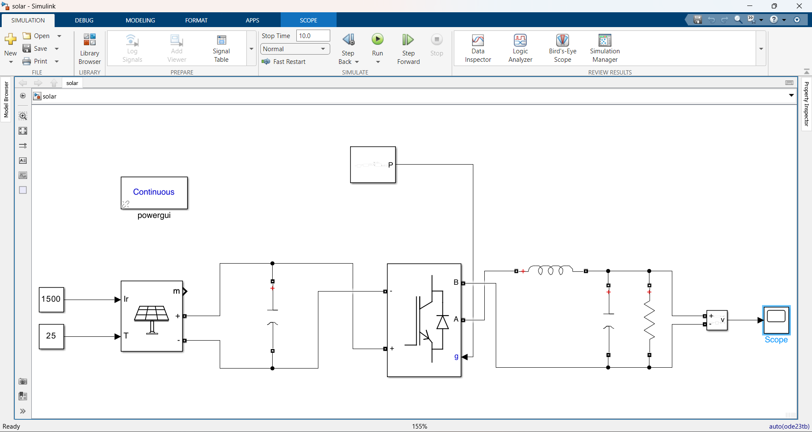
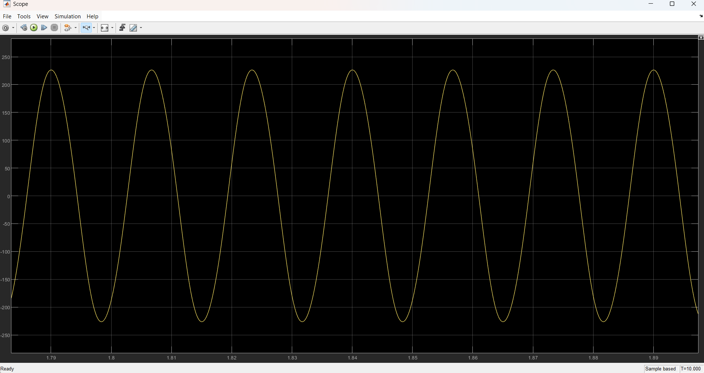

16/02/2026 (Monday)
Date
Aim / Objectives
To design the solar power generation system for home application using MATLAB/Simulink.
Apparatus
- Computer
- MATLAB Simulink
Theory
Power generation systems use photovoltaic (PV) panels to convert solar energy into electrical energy. The output of a PV array is direct current (DC), which is not directly suitable for household appliances. Therefore, an inverter is used to convert DC into alternating current (AC).
In a typical solar home system, the PV array feeds power into a power electronic converter such as a Universal Bridge. The switching operation is controlled using a PWM (Pulse Width Modulation) generator. This helps to produce an AC waveform from the DC source.
However, the inverter output contains harmonics due to switching operations. To reduce these harmonics and improve the waveform quality, passive filters consisting of inductors and capacitors are used. A properly filtered output ensures safe and efficient operation of household electrical devices.
Simulation using MATLAB Simulink allows modeling and analysis of the system performance before practical implementation.
Circuit Diagram

Procedure
- A new blank model was created in MATLAB Simulink.
- Required components were selected from Simulink → Simscape → Electrical → Specialized Power Systems → Fundamental Blocks.
- The circuit model was constructed according to the given simulation diagram.
- The PV Array module was configured by selecting the A10Green Technology A10J-M60-230 module.
- The Universal Bridge block was configured with 2 bridge arms using IGBT/Diodes as the power electronic devices.
- The PWM Generator (2-Level) block was configured as a single-phase full-bridge (4 pulses) with internal reference signal generation enabled.
- All capacitor values in the circuit were set to 0.006 F.
- Inductance values were set appropriately.
- The simulation was run.
- Output voltage waveforms were observed and recorded with and without the passive filter.
Observations

Results
The solar power generation system was successfully simulated. Output voltage waveforms were obtained, and it was observed that the inclusion of passive filters improved the waveform quality significantly.
Discussion
An inverter is an electronic device that converts DC power into AC power. In this experiment, the Universal Bridge acted as the inverter, controlled by a PWM generator.
Passive filters were used to reduce harmonics in the output waveform. Without filtering, the inverter output contained switching distortions. With the addition of capacitors, these distortions were reduced, resulting in a smoother waveform.
DC power is converted into AC because most household appliances operate on AC supply. Therefore, the conversion is essential for practical home applications of solar energy systems.
Conclusion
The solar power generation system for home application was successfully designed and simulated using MATLAB Simulink. The results showed that passive filters play a crucial role in improving output waveform quality. The system is suitable for supplying AC power to domestic loads.
References
- Chapman, S.J. (2019) MATLAB Programming for Engineers. 6th Edition. Cengage Learning: Boston, MA.
- Kumar, R. and Singh, S. (2020) 'Solar PV power generation using MATLAB/Simulink', International Journal of Renewable Energy Research, 10(2), pp. 567-575.
- MathWorks (2023) Solar Power Generation with Simscape Electrical, Available at: https://www.mathworks.com/help/physmod/sps/ (Accessed: 16 February 2026).
- Green, M.A. (2016) 'Solar cell efficiency tables (version 48)', Progress in Photovoltaics, 24(7), pp. 905-913.